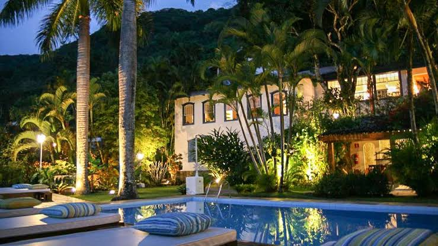

Recanto da Natureza
Principal
Hospedagens
Reservas
Fale Conosco
Recanto Da Natureza
Nada supera a paz que a Natureza nos transmite

Recanto da Natureza oferece diversas atividades como Piscinas para relaxar com uma otima vista, passeios a cavalos, estacionamento coberto para veiculos.
Restaurante com belicimo café colonial.
Nossa Localização: Cascata-Estrada São Joaquim